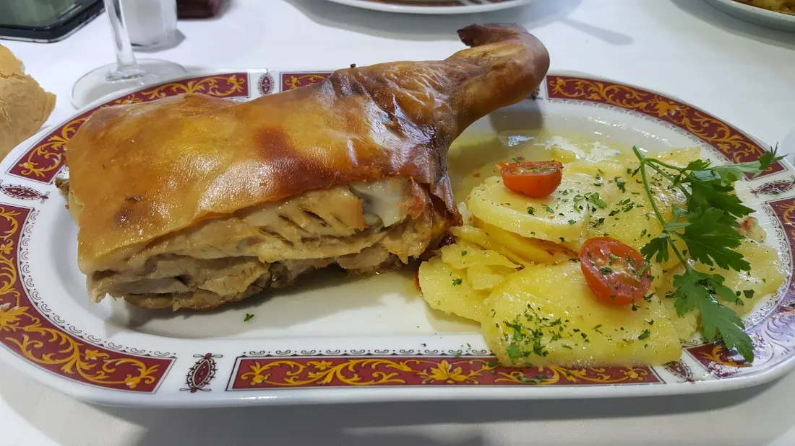
Cochinillo asado
En horno de leña, con la piel crujiente y patatas panaderas.
Desde el horno de leñaCochinillo, lechazo y cordero lechal
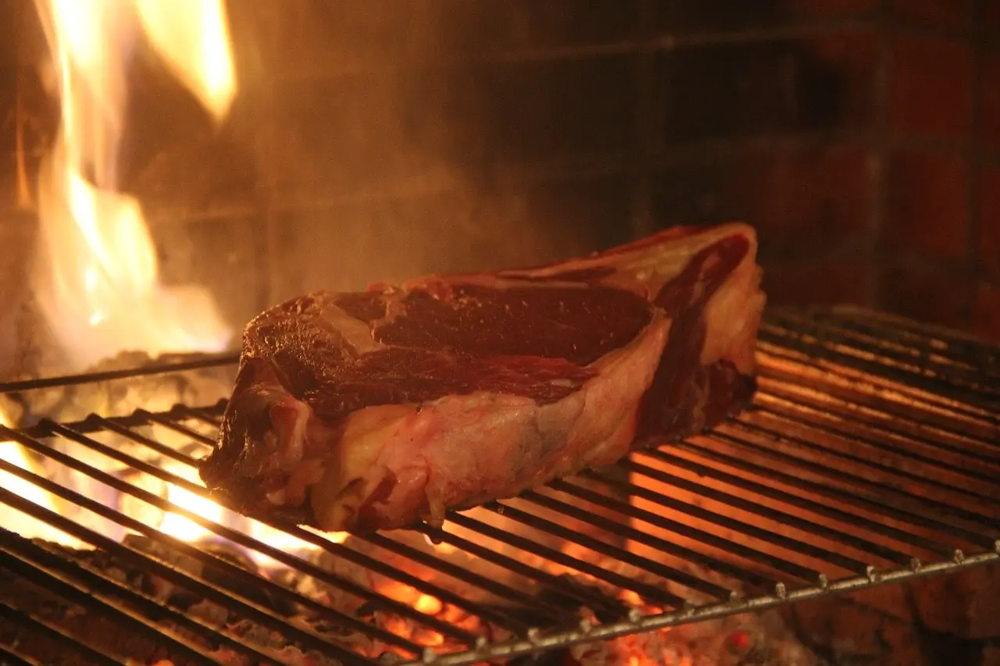
Avenida de los Pinos, 2Leganés, junto al Hospital Severo Ochoa
La casa
En el Asador de Salamanca combinamos lo clásico con lo moderno. En cada uno de nuestros tres salones encontrarás un ambiente distinto: un salón-terraza para comer cualquier día de la semana, nuestro famoso Salón Castellano y un salón medieval para celebraciones con capacidad para 170 personas.
La cocina está pensada para todo tipo de público: desde el cochinillo y el cordero asados en horno de leña hasta los platos de autor, pasando, cómo no, por las carnes rojas a la brasa. Y para terminar, nuestros postres caseros.
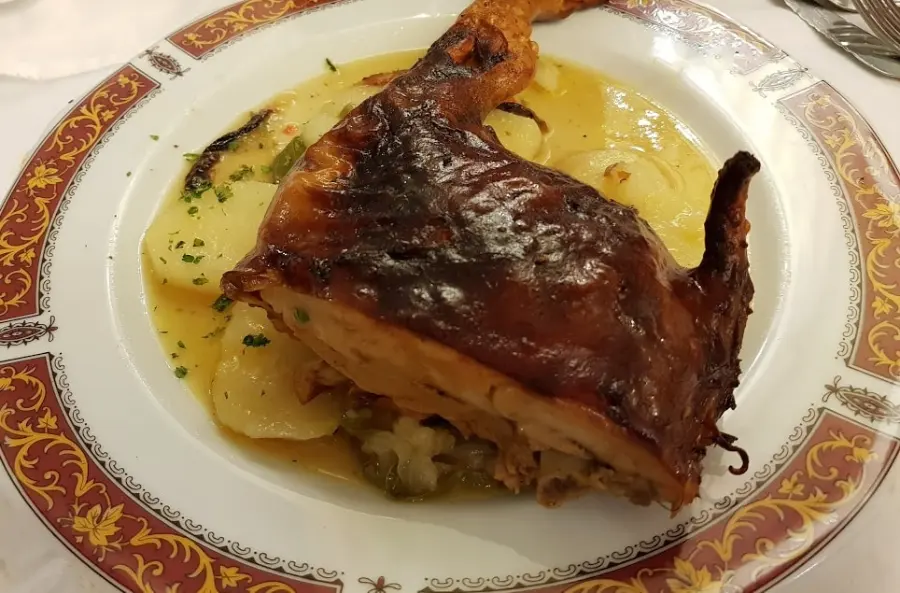
Del horno de leña
Cochinillo y cordero lechal asados en horno de leña, y carnes rojas a la brasa. Todo con patatas panaderas.

En horno de leña, con la piel crujiente y patatas panaderas.
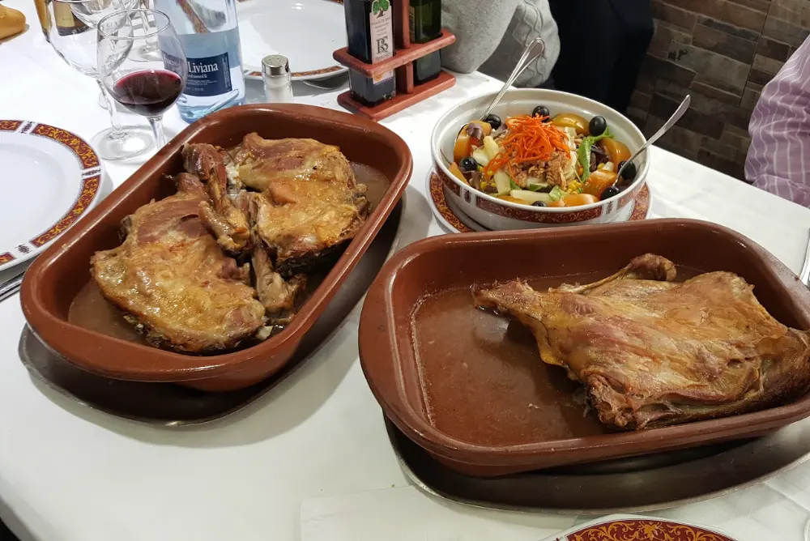
Pierna, paletilla o cuarto de lechazo para dos, en fuente de barro.
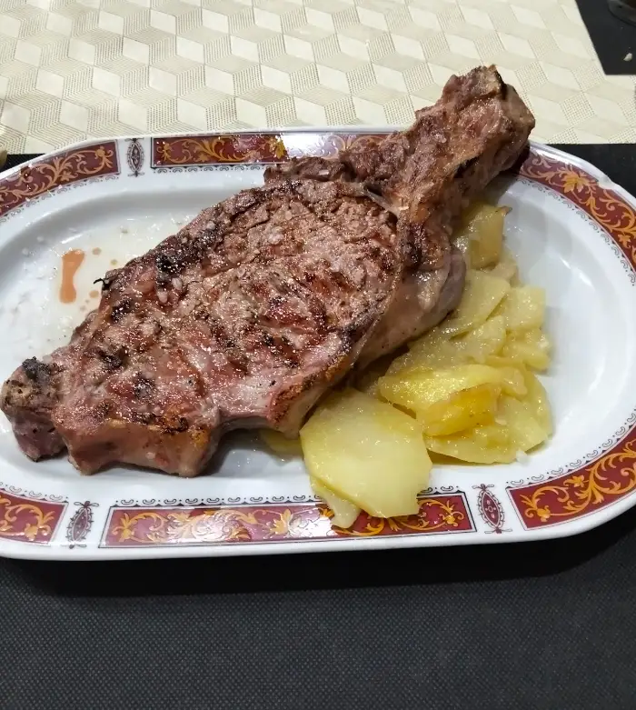
Para dos. Y a la brasa, solomillo, entrecot y chuletillas de lechal con pimientos de Guernica.
Los salones
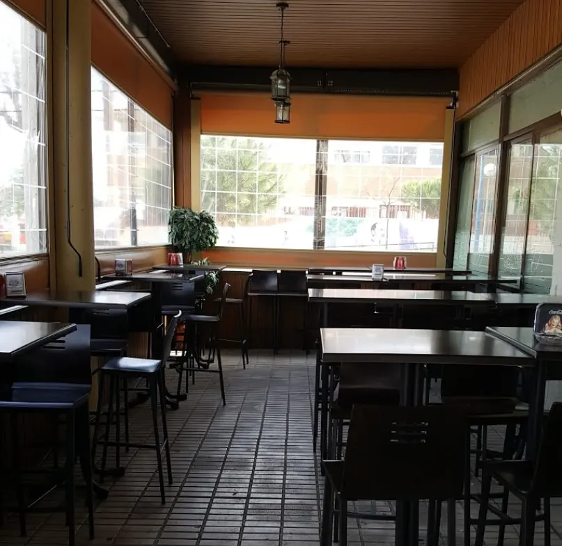
Acristalado y con luz de día, para comer cualquier día de la semana.
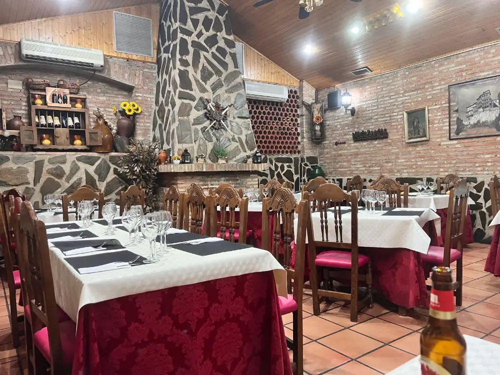
El más conocido de la casa: chimenea de piedra, ladrillo visto, techo de madera y mantel de damasco.
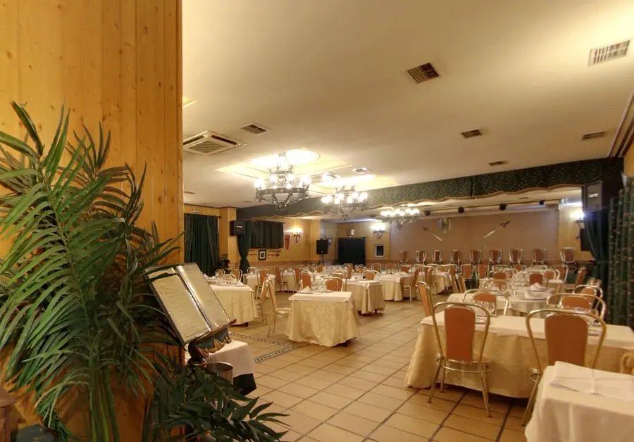
El de las celebraciones, con tizonas colgadas en las paredes.
Hasta 170 invitadosLa carta
Asados de horno de leña, carnes a la brasa, ibéricos, pescados y postres caseros.
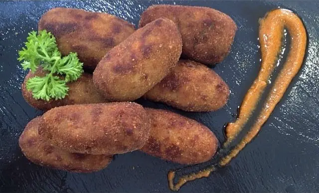
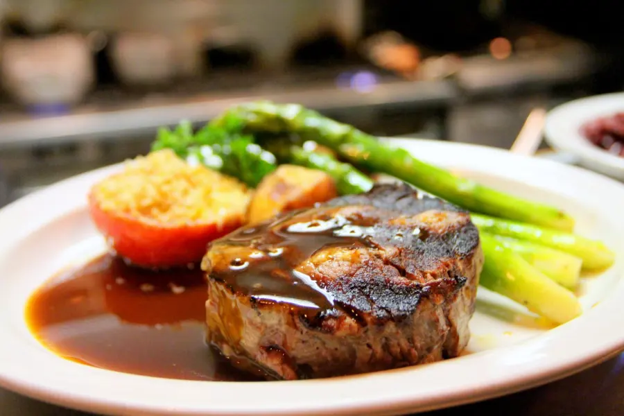
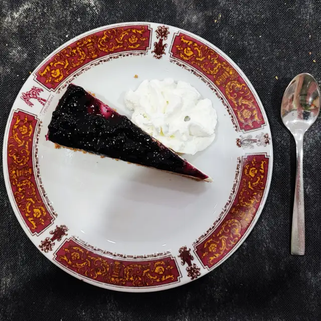
Bodega
Rioja y Ribera del Duero: Muga, Viña Ardanza, Viña Pomal, Cune, Pesquera, Protos, Matarromera, Pago de Carraovejas y Hacienda Monasterio. Blancos de Rueda y Rías Baixas, y cavas y champagnes para brindar.
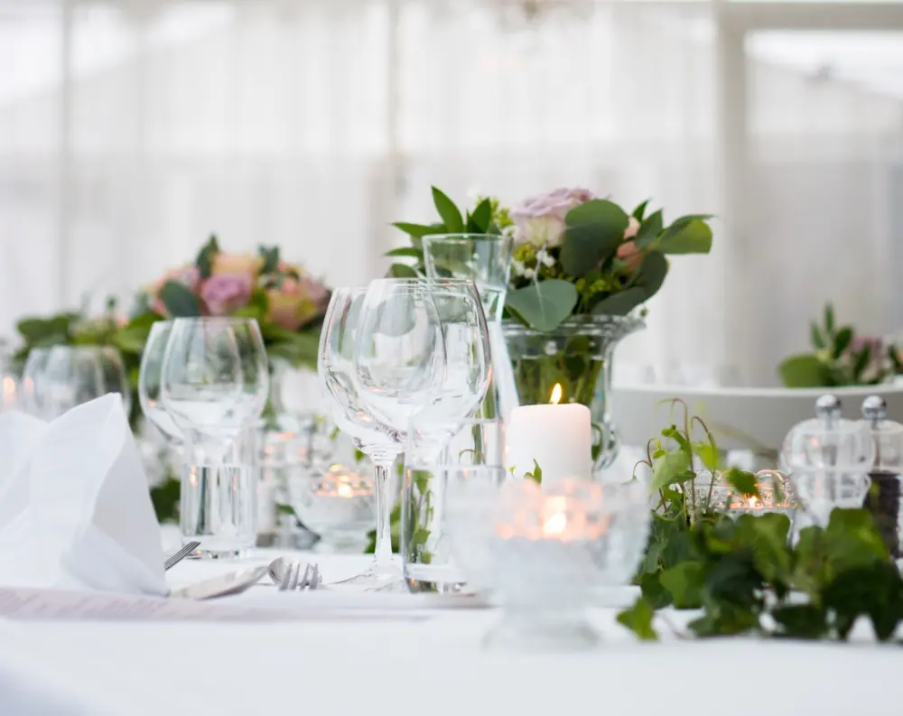
Bodas, bautizos y comuniones
Llevamos más de veinte años sirviendo banquetes de boda y, para nosotros, cada uno es tan especial como lo es para ti. Tenemos salones privados, proponemos distintos menús y cuidamos cada detalle para que todos tus invitados se vayan con buen sabor de boca, de los más clásicos a los más exigentes.
También celebramos bautizos, comuniones, comidas de empresa y reuniones familiares.
“Estuve para una boda. El local cumplió perfectamente con las expectativas. […] Y la atención de todo el personal fue excelente, muy atentos durante todo el evento.”
Ivan Gamo, en Google
4,21.188 opiniones en Google
“La comida, buenísima: cada plato fue un deleite, especialmente las carnes al horno, como el cochinillo y el cordero, que estaban excelentes, con un sabor y textura que solo ese tipo de cocción puede ofrecer.”
Daniel GM
“Restaurante que lleva mucho tiempo dando servicio en Leganés […] sigue dando buena calidad a un precio razonable. Tiene menú diario y otro especial para fines de semana y festivos.”
Salvador Mataix
Reservas
| Lunes a viernes | 9:00 – 17:30 |
|---|---|
| Sábados y domingos | 12:30 – 18:00 |